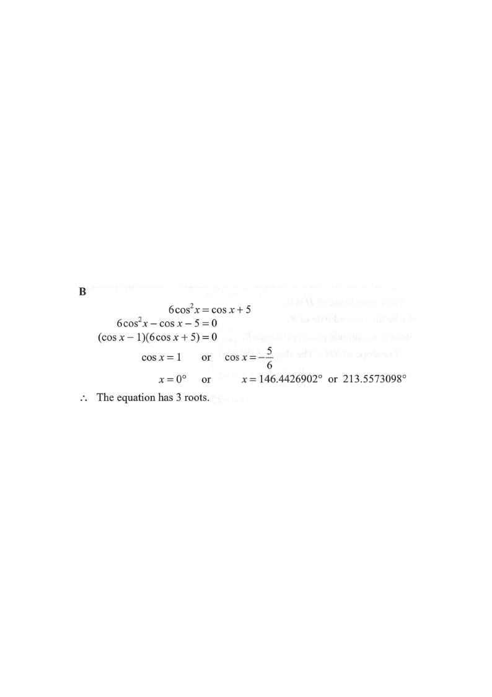

三角學 · 三角方程

$$6\cos^{2}x-\cos x-5=0$$
設 $c=\cos x$：$6c^{2}-c-5=0$。
$$(c-1)(6c+5)=0$$
故 $\cos x=1$ 或 $\cos x=-\dfrac{5}{6}$。
在 $0^{\circ}\le x<360^{\circ}$ 內只有 $x=0^{\circ}$（$360^{\circ}$ 不在範圍內）。
$$x=180^{\circ}-33.6^{\circ}=146.4^{\circ}\quad\text{或}\quad x=180^{\circ}+33.6^{\circ}=213.6^{\circ}$$
共 $1+2=3$ 個根。